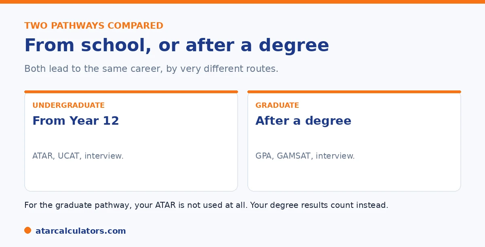

Here is the short version. Undergraduate medicine is direct entry from Year 12, using your ATAR, the UCAT. And an interview. Graduate, or postgraduate, medicine comes after you complete a bachelor's degree, and uses your university GPA, the GAMSAT, and an interview, with no ATAR at all. Roughly half of Australian medical students enter via the graduate route. Some universities, including Sydney, Melbourne, and ANU, are graduate only.
Many students assume medicine means a 99 ATAR straight from school. That is only one of two main pathways, and the other does not use ATAR at all.
Below is how the two compare. To explore your options, use our medicine ATAR calculator.
Key takeaways
- Undergraduate medicine is direct entry from Year 12.
- It uses your ATAR, the UCAT, and an interview.
- Graduate medicine comes after a bachelor's degree.
- It uses your GPA, the GAMSAT, and an interview, with no ATAR.
- Roughly half of students enter via the graduate route.
- Some universities are graduate only.
Two pathways to the same career
There are two main ways to become a doctor in Australia, and both lead to the same qualification. The difference is when you enter and what you are assessed on.

Undergraduate entry is from school. Graduate entry is after a first degree. Knowing the difference helps you plan, especially if your ATAR is not at the top end.
Undergraduate entry
Undergraduate medicine is direct entry from Year 12. It uses three things: your ATAR, the UCAT, and an interview. The ATAR needs to be very high, often 95 and above, with many successful applicants at 99 or higher.
This is the fastest route, but also the most competitive, with fewer than 1,000 places nationally. For the detail, see our medicine ATAR guide.
Graduate entry
Graduate, or postgraduate, medicine comes after you complete a bachelor's degree, in any approved field. It does not use your ATAR at all. Instead, you apply with your university GPA, the GAMSAT, and an interview.
So your Year 12 result becomes much less important. A strong university record can put you on equal footing, whatever your ATAR. This is how roughly half of medical students enter.
Want to see which pathway fits you?
Try the medicine ATAR calculator →Is one pathway easier?
Neither is easier, exactly; they are different. The undergraduate route is faster but demands a top ATAR straight from school. The graduate route takes longer, since you do a degree first, but it gives a fresh start based on university performance.
For students who did not get the ATAR they wanted, the graduate route is a genuine second chance. For those who thrive at school and want the fastest path, undergraduate entry suits better. The right one depends on you.
It helps to compare the two routes on the things that actually differ, because "easier" is the wrong lens. The undergraduate path is shorter and cheaper overall. You enter medicine directly from school and finish sooner. But the price of admission is a top ATAR (often 95 as a floor and 99 plus in practice) plus the UCAT and an interview, all while you are seventeen. The graduate path is longer and costs more. This is because you complete a full bachelor degree first, then apply with your university GPA, the GAMSAT and an interview. Your Year 12 ATAR plays no part at that stage. Neither is a soft option. This is because both funnel far more strong applicants than there are places. But they reward different strengths at different moments. The undergraduate route suits a student who peaks at school, is certain about medicine early, and wants the most direct line to practising. The graduate route suits a student whose ATAR fell short, who wants to be sure medicine is right before committing, or who simply matures into a stronger candidate at university. It also leaves them with a full second qualification as a fallback. So the useful question is not which is easier but which fits your circumstances. Your current ATAR, your certainty about medicine, your appetite for a longer path, and where your strengths are likely to show best.
Which universities offer which
Some universities offer undergraduate entry, some graduate, and some both. Notably, Sydney, Melbourne, and ANU are graduate only and do not admit school leavers directly into medicine.
A few universities also offer provisional entry. You apply in Year 12 with your ATAR and UCAT, and secure a conditional place in a graduate program after completing a bachelor's there. So check each university's structure. See our pathways guide.
The GAMSAT explained
Graduate-entry medicine uses the GAMSAT (Graduate Medical School Admissions Test) rather than the UCAT. It is sat by university graduates and tests reasoning across the sciences, humanities and written communication, at a level suited to degree holders.
The GAMSAT is demanding and, like the UCAT, rewards preparation. Together with your undergraduate results and an interview, it forms the basis of a graduate-entry application, replacing the ATAR-and-UCAT combination used for school leavers.
So on the graduate route, your school ATAR fades from the picture entirely. What matters is your degree performance, your GAMSAT, and your interview, which is why a lower school ATAR need not block this path.
The timeline compared
The two routes differ in length. Undergraduate medicine takes you straight from school into a medical degree. The graduate route means completing a first degree, then a graduate medical degree, which adds years overall.
Neither is simply better. The undergraduate route is faster but requires a top ATAR and UCAT straight from school. The graduate route takes longer but spreads the selection over two stages, which suits students who develop later.
Time and cost
Because the graduate route involves an extra degree, it usually costs more in time and money than undergraduate entry. That is a real consideration, though many students accept it as the price of a second, wider path into medicine.
Weigh this alongside your own situation. If you can reach undergraduate medicine directly, it is quicker and cheaper. If not, the graduate route’s extra time is often well worth it to reach the same destination.
Graduate entry as a second chance
For students who narrowly miss undergraduate medicine, graduate entry is a genuine second chance. A strong undergraduate degree can more than make up for a school ATAR that fell just short, and many doctors took exactly this route.
So a missed undergraduate place is not a closed door. It is often the start of a longer but equally valid path, one that rewards students who keep performing well at university.
Choosing your route
Which route suits you depends on your ATAR, your finances, and how quickly you want to qualify. If your ATAR and UCAT are competitive straight from school, undergraduate entry is the direct path. If not, plan the graduate route deliberately.
Either way, choose a first degree you would be happy with in its own right, in case medicine does not follow. A related science or health degree keeps the graduate route open while giving you a solid qualification regardless.
Which first degree to choose
For the graduate route, a first degree in a related science or health field is a natural choice, since it builds relevant knowledge and can satisfy any prerequisites for graduate-entry medicine. Biomedical science is a common example.
Still, choose a degree you would value even if medicine does not follow, and one you can perform strongly in, since your university results feed your application. A degree you enjoy and excel in serves you best either way.
Both routes are competitive
Neither route is easy. Undergraduate medicine demands a top ATAR, a strong UCAT and an interview, while graduate entry demands strong university results, the GAMSAT and an interview. Both select hard, in different ways.
So the choice is not about avoiding competition, but about which challenge suits you. Whichever route you take, expect to prepare thoroughly and perform well, because medicine is selective at every entry point.
Common questions
What's the difference between postgrad and undergrad medicine?
Undergraduate medicine is direct entry from Year 12, using your ATAR, the UCAT, and an interview. Graduate medicine comes after a bachelor's degree, using your GPA, the GAMSAT, and an interview, with no ATAR at all.
Does graduate medicine need an ATAR?
No. Graduate, or postgraduate, medicine does not use your ATAR. You apply after completing a bachelor's degree, using your university GPA and the GAMSAT, plus an interview. Your Year 12 result is not part of it.
Is graduate medicine easier than undergraduate?
Neither is easier, just different. Graduate entry takes longer, since you do a degree first, but gives a fresh start based on university performance. Undergraduate entry is faster but demands a top ATAR straight from school.
How many students enter via the graduate route?
Roughly half of Australian medical students enter through the graduate route. It is a mainstream pathway, not a backup, and a genuine option for students whose ATAR was not at the very top.
Which universities are graduate only for medicine?
Several, including Sydney, Melbourne, and ANU, are graduate only and do not admit school leavers directly into medicine. Others offer undergraduate entry, and some offer both, so check each university's structure.
Compare your medicine pathways
See realistic routes into medicine based on your ATAR. Free, and no signup.
Open the medicine ATAR calculator →Related guides
This guide is general information for students and parents, not formal admissions advice. ATAR cut-offs, UCAT and GAMSAT requirements, interview formats and pathways vary by university and change every year. For graduate entry, applications run through GEMSAS, and the UCAT and GAMSAT are run by their own bodies. Any figures here are approximate and based on recent years. So always confirm the current details with each university and your state admissions centre (such as UAC, VTAC, QTAC, SATAC or TISC). Reviewed by the ATARCalculators Editorial Team.